B-B.4.1 SPI 物理层与四种模式¶
所属章节：第五部 B. 总线协议 > B-B.4 SPI 总线
难度：[B→I] Beginner / Intermediate | 预计阅读时间：40 分钟
本节导读¶
SPI（Serial Peripheral Interface，串行外设接口）是一种用于板内短距离通信的主从式、同步、全双工串行接口，常用来连接控制器与 Flash（闪存）、传感器或显示屏。先把这三个基本词展开：
- 主从式：主机选择要通信的从机并提供时钟，从机按这个节拍收发数据。
- 同步：数据传输有专门的时钟线，双方按约定的时钟边沿采样，不需要各自猜测每一位持续多久。
- 全双工：主机到从机、从机到主机各有一条数据线，两个方向可以在同一组时钟中同时传位。
再看标准四线 SPI 各自负责什么：
- CS（Chip Select，片选）：决定哪颗从机参与本次通信。本例低有效，拉低选中，拉高释放。
- SCLK（Serial Clock，串行时钟）：主机输出的节拍信号，每一位都在它的边沿附近更新或被采样。
- MOSI（Master Out Slave In，主机输出、从机输入）：主机发往从机的数据线。
- MISO（Master In Slave Out，主机输入、从机输出）：从机发往主机的数据线。
因此，一笔通信可以先概括为：主机选中从机并连续提供时钟，MOSI 把主机一侧的位移给从机，MISO 同时把从机一侧的位移给主机。读取从机数据时，主机也要继续提供时钟，不能发完命令就停在那里等数据。
下图用于核对这些方向。多个从机可以共享 SCK、MOSI 和 MISO，但每个从机有独立的片选；图中 SCK 对应 SCLK，SIMO 对应 MOSI，SOMI 对应 MISO。不同资料会使用不同缩写，先确认方向，再对照名称。多从机的驱动权问题放到第 6 节展开。
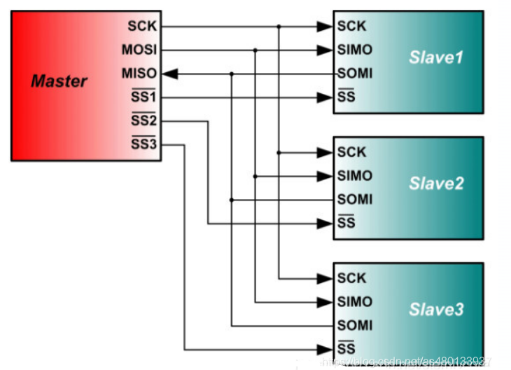
现在把这笔通信落到具体器件。本节只回答一个主问题：以 RK3568 为主机、Winbond W25Q128JV-IQ/JQ 为从机，双方怎样用 32 个时钟完成 9F 00 00 00 → ?? EF 40 18，读到这颗 Flash 的身份？采样边沿和电气条件为什么会影响结果？
W25Q128JV 是一颗 SPI NOR Flash，可保存固件和数据。0x9F 是 Read JEDEC ID 命令，JEDEC ID 是器件按 JEDEC 标准返回的身份标识，本例包含一个制造商字节和两个器件标识字节。实例采用标准四线 SPI、8 位字长和 MSB-first（Most Significant Bit first，最高有效位先发），即每 8 拍组成一个字节，每个字节先传最高位。
前 8 拍发送命令，后 24 拍主机继续提供时钟并接收三个身份字节。?? 表示命令阶段采回的位不参与身份判断，不表示它们必为 00 或 FF。EF 是 Winbond 制造商 ID，40 是 Memory Type，18 是 Capacity。EF 40 18 只适用于本例 IQ/JQ 后缀；手册给 IM/JM 后缀列出的 Device ID 是 7018h，不能套用本例答案。
本例先约定 SCLK 空闲为低、上升沿采样、下降沿更新，第 3 节会把这种约定命名为 Mode 0，并由 CPOL、CPHA 重新推导出来。SPI 没有统一的器件地址帧，也没有标准化的 ACK（Acknowledgement，接收确认）；线路发出了时钟，不等于从机已经正确理解数据，字节含义要由具体器件手册规定。
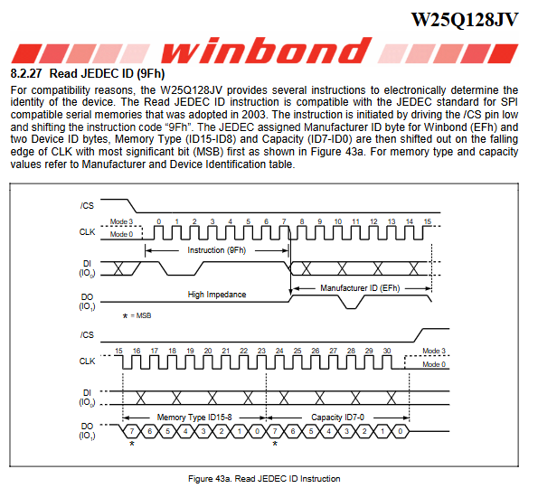
本节只讲物理层与四种模式。详细命令帧和 AC（Alternating Current，交流）时序预算归 B-B.4.2，Linux 设备配置与驱动实现归 B-B.4.3，spidev 工具排障归 B-B.4.4；这些后续内容都不是理解本篇 32 拍的前置条件。
1. 四线怎样完成一笔读取¶
1.1 把四根线落到实际器件引脚¶
前面的 CS、SCLK、MOSI、MISO 是主机侧常用名称。W25Q128JV 在手册中把相应引脚称为 /CS、CLK、DI、DO：
- 主机 CS 接 Flash 的 1 脚
/CS，拉低选中，拉高释放。 - 主机 SCLK 接 Flash 的 6 脚
CLK，边沿决定何时更新输出、何时采样输入。 - 主机 MOSI 接 Flash 的 5 脚
DI，本例承载0x9F和后续三个占位字节。 - 主机 MISO 接 Flash 的 2 脚
DO，本例承载三个身份字节。
下图用于核对方向、物理引脚和共同参考。先看左侧主机信号，再沿连线看到右侧 Flash 引脚，最后看两侧相同的 GND（Ground，地）符号。8 脚 VCC（电源）、3 脚 /WP（写保护）和 7 脚 /HOLD（暂停）也必须按手册与实际原理图处理，只是不进入本篇位流主线。
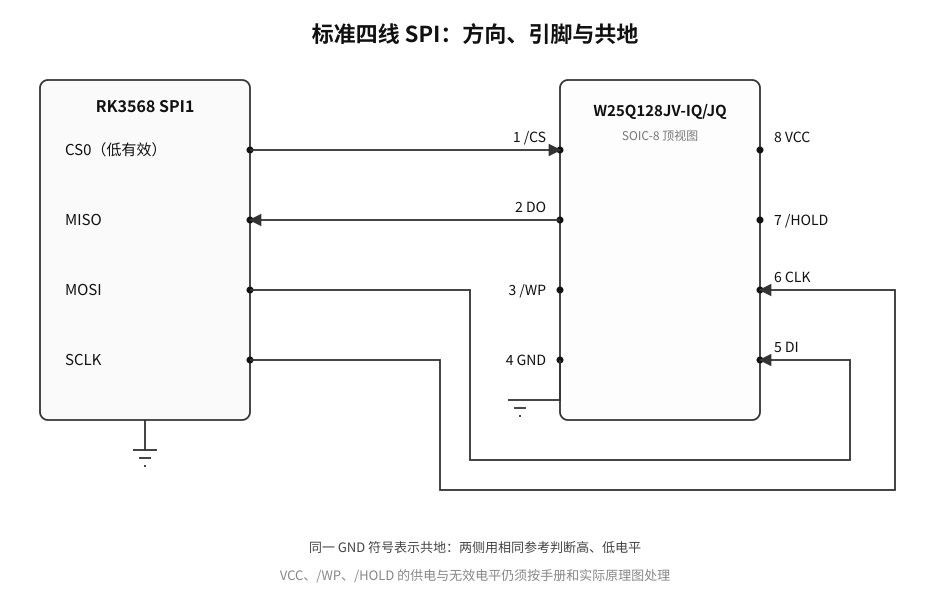
即使不看图，也可以按方向完成接线：主机 CS 接从机 /CS，主机时钟输出接从机 CLK，主机数据输出接从机 DI，从机 DO 接主机数据输入，双方 GND 相连。MOSI 与 MISO 不是两根可以按名字任意互换的对称线；接反后，主机命令根本到不了 Flash 的 DI。
除了图中的 SIMO/SOMI，厂商也会使用 SDI/SDO（Serial Data Input/Output，串行数据输入/输出）、COPI/CIPO（Controller Out/Peripheral In、Controller In/Peripheral Out，控制器输出/外设输入、控制器输入/外设输出）等名称。先确认每一端方向，再对照缩写，不能只凭名称猜测。
1.2 先排出一笔完整事务¶
本例的完整手工基线只有五步：
- 空闲时 CS 为高，SCLK 为低，双方已经约定 8 位、MSB-first 和 Mode 0。
- 主机拉低 CS，选中这一颗 Flash，并在第一个上升沿前把
0x9F的最高位放到 MOSI。 - 主机连续提供 32 个 SCLK。每个上升沿，Flash 采样 MOSI，主机采样 MISO；每个下降沿，输出端准备下一位。
- 前 8 拍让 Flash 收齐
0x9F；后 24 拍中，主机继续发送00 00 00，同时依次收齐EF、40、18。 - 第 32 个上升沿采到最后一位后，SCLK 回到空闲低，主机释放 CS；Flash 结束本次指令并释放 DO。
这里的三个 00 称为占位字节。它们不是三条新命令，作用是让主机继续提供时钟，因为 Flash 只有收到时钟，才能逐位移出身份数据。
由此先得到一个不依赖任何图示的结论：一笔读取不是“只发 8 拍命令，然后数据自动出现”，而是命令 8 拍加响应 24 拍，共 32 拍；MOSI 与 MISO 在每一个时钟里都同时存在。
把上面 32 拍里的字节排出来：9F 00 00 00 ?? EF 40 18
CS 拉低期间传输的这串字节序列，就是这笔事务的帧。SPI 标准不规定帧长什么样；每个器件手册定义自己的帧。
常见形状是四段：[命令][地址][dummy][数据]，后三段有没有、多长，全查手册。
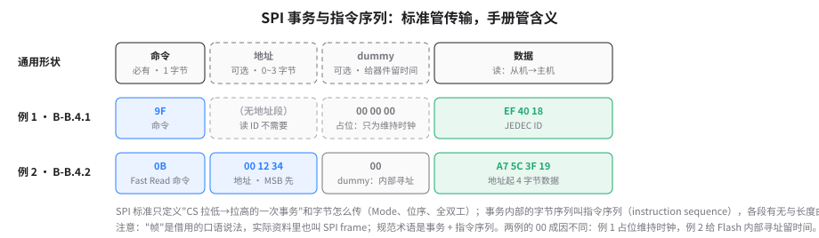
2. 电平、移位与 MISO 驱动权¶
2.1 推挽与高阻怎样决定线路电平¶
常见 SPI 信号采用推挽输出：输出级既能主动把引脚拉高，也能主动把引脚拉低。因此，高电平不依赖 I2C 开漏总线那种上拉电阻。高阻态则是另一件事：输出级既不主动拉高，也不主动拉低，相当于退出对线路的驱动。推挽与高阻的基础还可回看 B-B.3.1。
W25Q128JV 手册规定，/CS 为高时器件未被选中，DO 处于高阻；/CS 拉低后才接受指令。所以 CS 不只决定“是否解释命令”，也决定这颗 Flash 是否可以驱动共享 MISO。
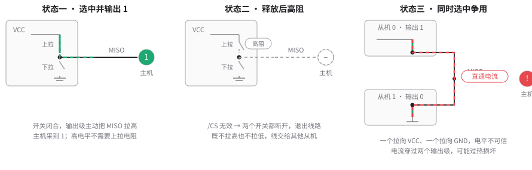
两个推挽输出若同时把共享 MISO 分别拉向高、低电平，就会形成“电源 → 一个输出级 → MISO → 另一个输出级 → 地”的直通电流路径。结果不仅是电平和数据不可信，还可能使输出级过热或损坏。因此，未选中的从机能否释放 MISO，必须逐颗核对器件手册，不能用“SPI 通常如此”代替。
“推挽不需要 I2C 式上拉”也不等于任何 SPI 引脚都禁止上拉。CS 等引脚可能因上电状态或器件建议而需要上拉，应以手册和原理图为准。
2.2 全双工是两个方向同时移位¶
MOSI 与 MISO 是两条独立数据线，所以双方可以在同一组时钟中同时发送，这称为全双工。可以用两个 8 位移位寄存器理解：移位寄存器是一串按时钟移动的位，一端把当前输出位送到引脚，另一端把刚采样的输入位移入。
下面动画直接展开主事务的第 9～16 拍：MOSI 是占位字节 00000000，MISO 是制造商 ID 11101111。先看两侧已经预载的 b7，再逐拍观察同一边沿怎样把 MOSI 的 0 采入 Flash、把 MISO 的 1 或 0 采入主机，最后核对主机得到 EF、Flash 得到 00。这里不是 0x9F 命令的前 8 拍。
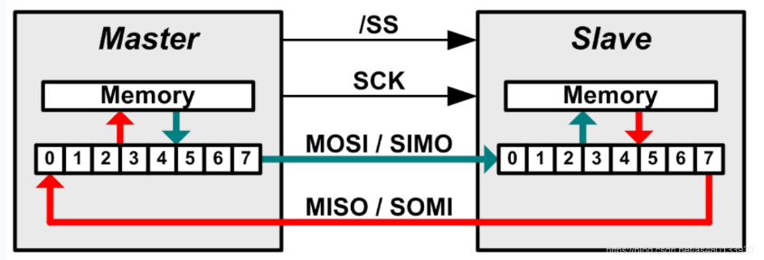
按 MSB-first，第 1 拍双方输出各自的 b7，第 2 拍输出 b6，直到第 8 拍输出 b0。8 个采样边沿后，主机原字节移入 Flash，Flash 原字节也移入主机。连续重复四组，就得到本例 32 拍。
全双工不表示两个方向始终都有协议意义。前 8 拍中，主机仍采样 MISO，但手册没有把这段 DO 定义为身份响应，所以 ?? 不解释；后 24 拍中，Flash 仍采样 MOSI 上的三个 00，但它们只是给接收提供时钟的占位数据。关闭任何一条数据线都不是完成本例读取的前提，继续提供时钟才是。
3. CPOL 与 CPHA 怎样决定采样¶
CPOL（Clock Polarity，时钟极性）回答：没有传输时，SCLK 停在高电平还是低电平？
- CPOL=0：空闲低，每个时钟周期的第一个边沿是上升沿，第二个边沿是下降沿。
- CPOL=1：空闲高，每个时钟周期的第一个边沿是下降沿，第二个边沿是上升沿。
CPHA（Clock Phase，时钟相位）回答：接收器在一个周期的第几个边沿采样？ CPHA=0 在第一个边沿采样，CPHA=1 在第二个边沿采样。另一个边沿用于更新输出。
这里把三个动作分开：
- 采样：接收端在指定边沿读取输入电平，并把它保存为一个位。
- 更新：发送端在另一个边沿把下一位送到输出引脚。
- 预载：首位不等待某个更新边沿，而是在首次采样前就已经放到引脚上并保持稳定。
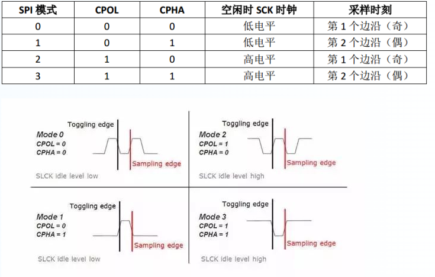
本例 Mode 0 是 CPOL=0、CPHA=0。由定义直接推出：空闲低，第一个边沿是上升沿，所以上升沿采样、下降沿更新。又因为第一个上升沿就要采样，双方的首位必须在它到来前预载，不能等上升沿到了才临时取出。
接收端并非在理想边沿瞬间看一眼就必然可靠。建立时间要求数据在采样边沿前至少稳定多久，保持时间要求它在采样边沿后再保持稳定多久。更新与采样分开，为数据稳定留出时间；实际最小窗口仍以双方手册为准。
4. 逐拍推演 Mode 0 的 32 拍¶
4.1 第 1～8 拍：接收 0x9F¶
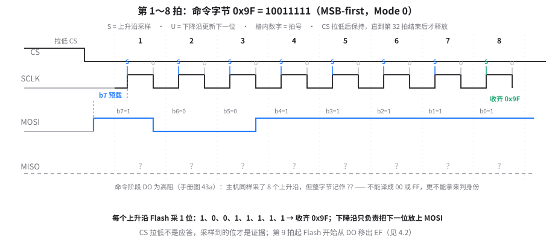
0x9F 的二进制是 10011111。MSB-first 的 MOSI 位序因此是 1、0、0、1、1、1、1、1。
CS 拉低后、第 1 个上升沿前，主机已经把 b7=1 预载到 MOSI。第 1 个上升沿，Flash 采样这个 1，主机也采样一次 MISO；第 1 个下降沿，主机把 MOSI 更新为 b6=0。第 2 个上升沿采样 0，随后的下降沿再更新为 b5=0。如此重复，第 8 个上升沿采样 b0=1，Flash 收齐 10011111，即 0x9F。
主机也在这 8 个上升沿采样了 8 个 MISO 位，但手册图 43a 把命令阶段的 DO 画为高阻，没有把它们定义为身份响应。因此首字节写成 ??，不能把它固定译成 00 或 FF，更不能拿它判断器件身份。
4.2 第 9～32 拍：读出 EF 40 18¶
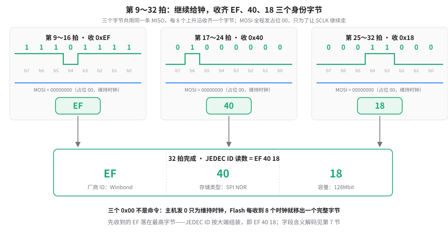
第 8 个下降沿之后，Flash 准备 0xEF 的最高位。0xEF=11101111，所以第 9 个上升沿主机采到 1，随后各拍依次采到 1、1、0、1、1、1、1，第 16 个上升沿收齐 EF。
同样的过程重复两次：第 17～24 拍接收 0x40=01000000，位序为 0、1、0、0、0、0、0、0；第 25～32 拍接收 0x18=00011000，位序为 0、0、0、1、1、0、0、0。与此同时，MOSI 在这 24 拍始终发送三个 0x00 的位，以维持时钟。
下表把每个上升沿实际采到的位全部展开。先看拍号，再看 MOSI 从 9F 进入三个 00，最后看 MISO 从不解释阶段进入 EF 40 18。
| 拍号 | MOSI 被 Flash 采样 | MISO 被主机采样 | 所属字节 |
|---|---|---|---|
| 1～8 | 1、0、0、1、1、1、1、1 |
?、?、?、?、?、?、?、? |
9F；?? 不解释 |
| 9～16 | 0、0、0、0、0、0、0、0 |
1、1、1、0、1、1、1、1 |
占位 00；EF |
| 17～24 | 0、0、0、0、0、0、0、0 |
0、1、0、0、0、0、0、0 |
占位 00；40 |
| 25～32 | 0、0、0、0、0、0、0、0 |
0、0、0、1、1、0、0、0 |
占位 00；18 |
即使删去表格，前面三段也已经给出全部 32 个采样位：第 1～8 拍发送 10011111，第 9～16 拍接收 11101111，第 17～24 拍接收 01000000，第 25～32 拍接收 00011000，后 24 拍 MOSI 全为 0。拍号、位序和字节边界没有依赖表格才能补齐的信息。
4.3 在共同时间轴核对四根信号¶
下图把同一笔事务画在共同时间轴上。先沿 CS 找到拉低与释放位置，再数 SCLK 的 32 个上升沿；竖虚线与橙色点标出采样位置。随后对照 MOSI 的 9F 00 00 00 和 MISO 的 ?? EF 40 18，特别看第 8 个下降沿与第 9 个上升沿之间 EF 最高位的预载。该图是依据手册作出的机制推演，不是实测截图。
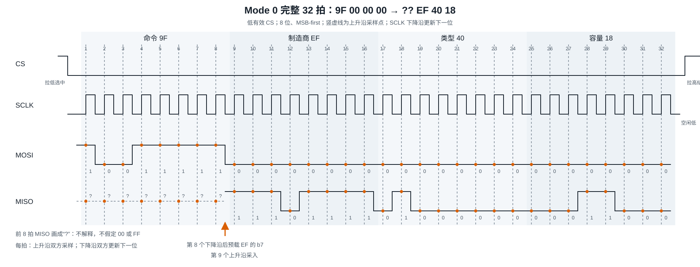
不看图也能复核关键时刻：第 8 个上升沿收齐命令，第 8 个下降沿后 Flash 准备 EF 的 b7，第 9 个上升沿主机采入该位；第 16、24、32 个上升沿分别收齐 EF、40、18。第 32 个上升沿后，SCLK 回到空闲低，CS 拉高，Flash 的 DO 再次进入高阻。
CS 释放只界定本次串行指令结束，不表示从机返回了 ACK，也不自动证明身份正确。支持本例身份判断的证据是有效偏移处的 EF 40 18，不是“32 拍发完了”或“CS 已拉高”。
4.4 用 Timing Lab 逐拍验证¶
下面的纯波形实验室用于练习同一过程。先选择模式，再按“下一拍”观察当前位、采样边沿和已接收位；也可按“播放”连续推进，用“暂停”停在某拍，并切换 0.5×、1×、2× 速度。任何手动逐拍、复位或模式切换都会停止自动播放；第 32 拍后自动停止并释放 CS。用“上一拍”回退，用“复位”回到 CS 空闲。Mode 0 对应本例；Mode 1、2 是通用模式推演，不是本例 Flash 的可用配置。
5. 由 CPOL×CPHA 推导四种模式¶
把 CPOL 的两种空闲电平与 CPHA 的两种采样位置组合起来，就得到四种模式，不需要分别死记：
- Mode 0（CPOL=0，CPHA=0）：空闲低，第一个边沿是上升沿，所以上升沿采样、下降沿更新；首位在第一个上升沿前预载。
- Mode 1（CPOL=0，CPHA=1）：空闲低，第二个边沿是下降沿，所以下降沿采样、上升沿更新；第一个上升沿先更新首位。
- Mode 2（CPOL=1，CPHA=0）：空闲高，第一个边沿是下降沿，所以下降沿采样、上升沿更新；首位在第一个下降沿前预载。
- Mode 3（CPOL=1，CPHA=1）：空闲高，第二个边沿是上升沿，所以上升沿采样、下降沿更新；第一个下降沿先更新首位。
| 模式 | CPOL | CPHA | 空闲电平 | 采样边沿 | 更新边沿 | 首位上线时机 |
|---|---|---|---|---|---|---|
| Mode 0 | 0 | 0 | 低 | 上升沿 | 下降沿 | 第一个上升沿前预载 |
| Mode 1 | 0 | 1 | 低 | 下降沿 | 上升沿 | 第一个上升沿更新 |
| Mode 2 | 1 | 0 | 高 | 下降沿 | 上升沿 | 第一个下降沿前预载 |
| Mode 3 | 1 | 1 | 高 | 上升沿 | 下降沿 | 第一个下降沿更新 |
下面动画的每格只画前两个时钟，四组共用同步播放头。阅读顺序固定为：先看空闲高或低，再找 S 标记落在第一还是第二个边沿，最后看 b7 是提前预载，还是由第一个边沿更新。U 标记表示更新下一位。播放、暂停或单步只改变观察位置，不改变四种模式的定义。
展开静态图：SPI 四种模式的空闲、首位、采样和更新
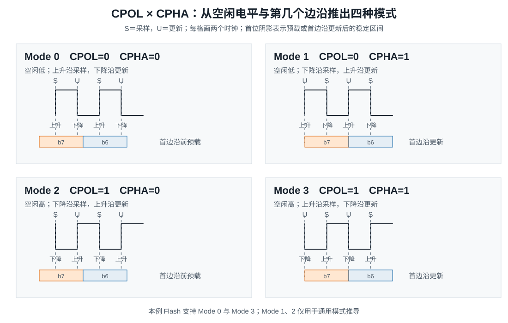
不看图和表，也能从两个参数重新推导：CPOL 决定第一个边沿的方向，CPHA 决定这个边沿是采样还是更新；若 CPHA=0，首位必须预载，若 CPHA=1，首位可由第一个边沿更新。
W25Q128JV 支持 Mode 0 和 Mode 3。两者都是上升沿采样 DI、下降沿更新 DO，差别是空闲电平以及首位预载还是首边沿更新。Mode 1、Mode 2 在这里只用于理解通用机制，不能写成本例 Flash 的可用配置。
SPI 是全人工约定的总线，模式在"设计时"就定死了，上电后没有任何握手过程。
那么"选择模式"具体是谁在选?
分两步看：
第一步：器件手册圈定范围。 从机 datasheet 声明自己支持哪些模式。W25Q128JV 手册写的是支持 Mode 0 和 Mode 3——这是硅片内部采样逻辑决定的，用户改不了。
第二步：主机软件配置四选一。 主机控制器（RK3568 SPI1）上有 CPOL、CPHA 两个配置位，驱动初始化时写进控制器寄存器（RK 上是 SPI_CTRLR0 里的 SCPOL/SCPH 位，具体由设备树或驱动代码决定）。写哪个值？必须落在从机支持的集合里。W25Q128JV 支持 {0, 3}，所以主机只能配 0 或 3；你文档里选 Mode 0，就是这个"主机配置值"落在从机支持范围内的一个具体选择。
从机这边永远收不到任何"模式通知"。它没有配置寄存器告诉你"我工作在 Mode 0"，它只是被动地盯着 SCLK 边沿采样。所谓"双方约定 Mode 0"，准确说法是：设计者和固件把主机配成了 Mode 0，而恰好这颗 Flash 能在 Mode 0 下正确工作。约定发生在画图和写代码的时候，不在总线上。
四种模式没有天然的性能优劣，主从双方必须使用器件要求的组合。模式不匹配可能采到旧位、相邻位、固定值或不确定电平，也可能让器件状态机收到错误命令，不能概括成“数据一定整体移一位”。
6. 多从机怎样避免 MISO 争用¶
常见多从机接法是让所有从机共享 SCLK、MOSI、MISO，再为每个从机分配独立 CS。N 个从机通常需要 N+3 根信号线。主机只拉低目标从机的 CS，其他 CS 保持无效。
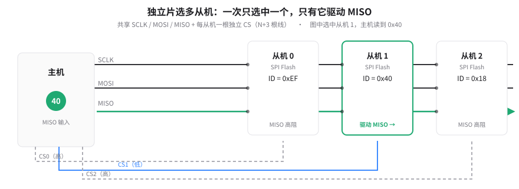
一次完整交换可以按下面的顺序理解：
- 总线空闲时，所有 CS 都无效，SCLK 保持在即将使用的模式所要求的空闲电平。
- 主机只选中目标从机；目标从机获得响应时钟和在适当阶段驱动 MISO 的权利。
- 其他从机忽略本次交换，并按各自手册让 MISO 保持高阻。
- 主机释放目标 CS，等本次交换完全结束后，才能选中另一个从机。
不同从机可以要求不同模式，但必须在前一笔事务已经结束、所有 CS 均无效后改变时钟约定，再开始下一笔。不能在一次器件事务中途改变 CPOL 或 CPHA。
多从机问题的关键不是“共享线越多越省”这么简单，而是任一时刻只能有一个从机主动驱动共享 MISO。若某器件在 CS 无效时不能释放 MISO，就要按器件手册增加三态缓冲或改变连接方式，不能靠软件忽略错误数据来消除电气争用。
7. 模式正确，为什么仍会读错？¶
前六节推演的是理想条件下的 32 拍。本节继续回答导读的后半个问题：这些拍在真实引脚上为什么可能不再可信。先看请求频率怎样经过分频变成实际 SCLK，再看电气条件怎样破坏采样，最后分别用推演、逻辑分析仪和示波器验证。
7.1 请求的频率怎样变成引脚上的实际 SCLK？¶
本例的 32 拍不会因频率改变，改变的是每拍持续时间，以及发送端能否在采样前把数据稳定下来。要知道这段时间，先看请求值怎样变成引脚上的实际时钟。
主机通常对源时钟进行整数分频来产生 SCLK：
下面只是通用硬件分频的教学推导，不是 RK3568 的固定源时钟，也不是当前板卡实测：假设源时钟为 100 MHz，目标上限为 30 MHz，并且硬件要求选择不超过目标上限的可用整数分频。
- 理想分频是
100 ÷ 30 ≈ 3.33，不是整数。 - 若取 N=3，会得到约 33.33 MHz，超过目标上限。
- 最小满足“不超过目标”的整数是 N=4，所以得到
100 MHz ÷ 4 = 25 MHz SCLK。
25 MHz 只在这组假设下成立。换源时钟、分频约束或目标上限，结果都可能改变。实际可用频率还必须同时满足控制器能力、Flash 手册限制和板级信号质量，取三者中最严格的上限。
在这组假设下，32 拍的纯时钟时间为 32 ÷ 25 MHz = 1.28 μs。它不包含准备、等待和片选间隔，不能当成整笔操作耗时，更不能把 25 MHz 或 1.28 μs 写成仪器测得的结果。频率升高后，每拍时间缩短，下一节的采样窗口也会随之收紧。
7.2 Mode 0 配置正确，为什么还会采错？¶
共地与电平兼容是第一层条件。接收器按输入门限把模拟电压判成 0 或 1；没有共地，双方就失去共同的电压参考。供电范围、输入门限和绝对最大额定值是不同指标，不能因为“都是 SPI”就默认任意 1.8 V、3.3 V 或 5 V 引脚可以直接互连。需要电平转换时，还要核对方向、速度和通道特性。
真实传播与采样窗口是第二层条件。发送端更新后，数据不会在同一瞬间于接收端稳定；SCLK 也需要传播。只有数据在采样前满足建立时间、采样后满足保持时间，收到的位才可信。速率提高后，原有稳定窗口可能不再足够。详细的输出有效延迟、传播与输入时序预算属于 B-B.4.2，本节只建立物理后果。
信号完整性是第三层条件。走线、连接器与负载会形成分布电感和电容，快速边沿可能产生过冲、下冲和振铃。若振铃反复穿过输入门限，接收器可能在一次预期跳变附近作出错误判决；边沿过慢则会压缩有效采样窗口。影响边沿的不只是 SCLK 标称频率，驱动强度和上升、下降时间同样重要。
不存在适用于所有板卡的固定走线长度或串联电阻答案。源端串联阻尼是否有效、阻值多大，需要结合输出阻抗、走线、负载和接收端实测波形决定；“降速后读数稳定”也只能提示问题可能与速度、时序或信号质量有关，不能单独证明协议逻辑完全正确。
7.3 怎样验证拍序、位流和电平？¶
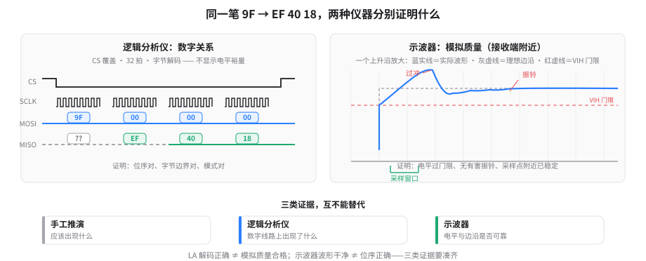
逻辑分析仪适合核对数字关系：CS 是否覆盖整笔事务，SCLK 是否有 32 拍，空闲电平和采样边沿是否符合模式，MOSI 是否依次出现 9F 00 00 00，MISO 的有效位置是否依次出现 EF 40 18。它能帮助判断位流是否符合解码规则，但不能完整揭示模拟电平裕量。
示波器适合观察真实电压和边沿：接收端高、低电平是否越过门限，是否有过冲、下冲、振铃或缓慢边沿，数据在采样附近是否稳定。测量时应尽量观察接收端附近，并注意接地与探测方式本身也会改变结果。
因此，本例至少要区分三类证据：手工推演说明“应该出现什么”，逻辑分析仪说明“数字线路上出现了什么”，示波器说明“这些电平和边沿是否具备可靠的模拟质量”。任何一类都不能自动代替另外两类。
本文的器件结论依据 Winbond《W25Q128JV》Revision F：第 3.1 节为 SOIC-8 引脚，第 4.1～4.2 节为 CS、高阻与 DI/DO 边沿，第 6.1 节为 Mode 0/3，第 8.1.1 节为 IQ/JQ 与 IM/JM 的 Device ID 区分，第 8.2.27 节及图 43a 为 0x9F 和三个身份字节。所有波形均为机制示意；本文未执行目标板运行、逻辑分析仪抓取或示波器测量。
本节总结 [B→I]¶
主机与 W25Q128JV 的这笔交换可以压缩成一条物理链：CS 选中器件并赋予 MISO 驱动权，主机提供 SCLK，MOSI 与 MISO 在同一组时钟中全双工移位，CPOL 决定空闲电平，CPHA 决定第一还是第二个边沿采样，电气条件决定接收端能否把边沿处的电压判成正确位。
Mode 0 下，首位预载、上升沿采样、下降沿更新。第 1～8 拍发送 10011111，即 0x9F；第 9～16、17～24、25～32 拍分别接收 11101111、01000000、00011000，即 EF 40 18。首字节 ?? 不解释，后 24 拍的三个 00 用于维持时钟。32 拍完成与 CS 释放都不是 ACK，有效身份数据才是本例的协议证据。
四种模式其实就是 CPOL 与 CPHA 的四种组合。多从机共享线路时必须用独立 CS 管理 MISO 驱动权；速率、建立与保持、电平和信号完整性则共同决定理想位序能否在真实板卡上成立。
本节自查¶
Q1. 为什么本例要发送 4 个字节才能读到 3 字节 JEDEC ID？首字节为什么不解释？
第 1 字节的 8 拍用于发送 0x9F，后 3 字节的 24 拍持续提供时钟并接收 EF 40 18，总共 32 拍。命令阶段的 DO 没有被手册定义为身份响应，因此首字节写成 ??，不能固定当成 00 或 FF。
Q2. 在 Mode 0 中，0x9F 的 b7 为什么必须在第一个 SCLK 边沿前上线？第 8 个下降沿和第 9 个上升沿分别发生什么？
CPHA=0 要在第一个边沿采样，因此 b7 必须提前预载并满足建立时间。第 8 个下降沿后，Flash 准备 EF 的 b7；第 9 个上升沿，主机采入这一位，开始接收制造商 ID。
Q3. 已知 SCLK 空闲为高、第二个边沿采样，这是哪种模式？首位何时上线？它是否适用于本例 Flash？
空闲高说明 CPOL=1，第二个边沿采样说明 CPHA=1，因此是 Mode 3。第一个下降沿先更新 b7，第二个上升沿再采样。W25Q128JV 支持 Mode 3，但本贯穿实例固定使用 Mode 0。
Q4. 为什么模式不匹配不能简单理解为‘数据一定整体移一位’？
错误配置会改变采样相对于数据跳变的位置，可能采到旧位、相邻位或不确定电平，结果取决于真实波形和器件行为。SPI 没有标准 ACK，主机也不能仅凭时钟发完就发现这些错误。
Q5. 两个独立 CS 的从机同时驱动共享 MISO，为什么会比‘数据错乱’更严重？
若一个推挽输出把 MISO 拉向电源，另一个把它拉向地，会形成从电源经两个输出级到地的直通电流，既使电平与数据不可信，也可能损伤输出级。未选中的从机必须按各自手册释放 MISO。
Q6. 100 MHz 源时钟、30 MHz 目标上限为什么在教学算例中得到 25 MHz？这个结果是不是实测频率？
理想分频约为 3.33；分频 3 会产生约 33.33 MHz，超过目标上限，最小满足条件的整数分频是 4，所以计算结果为 25 MHz。它只是给定假设下的通用分频推导，不是当前板卡的仪器实测。
Q7. 逻辑分析仪看到 32 拍且解码为 9F 00 00 00 / ?? EF 40 18，为什么仍不能代替示波器？
逻辑分析仪主要证明数字线路在其解码门限下呈现预期位流，不能完整揭示过冲、振铃、边沿形态和模拟电平裕量。模拟质量仍需用示波器和正确探测方法检查。
Q8. 为什么 EF 40 18 不能用于所有名为 W25Q128JV 的器件？
手册按后缀区分 Device ID：本例 IQ/JQ 对应 4018h，IM/JM 对应 7018h。因此只有先确认器件后缀，才能把 EF 40 18 当作预期身份数据。